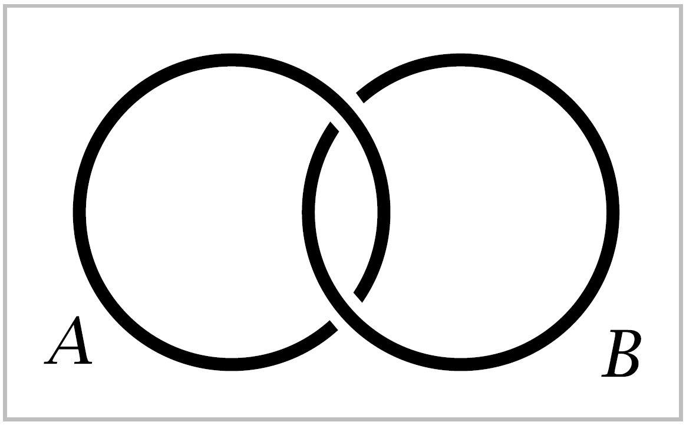
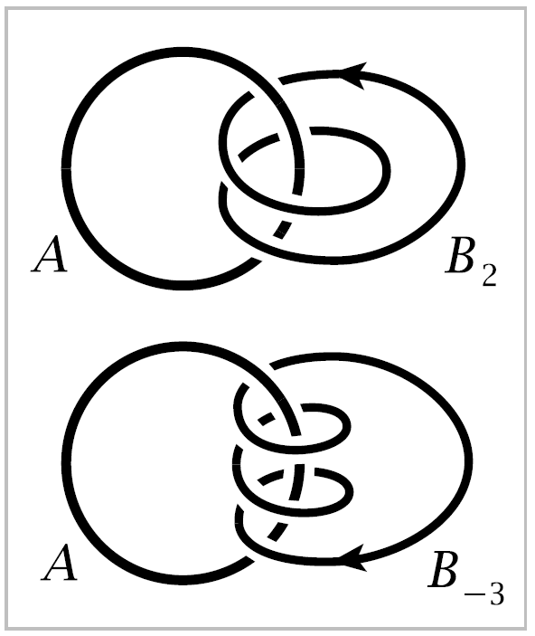
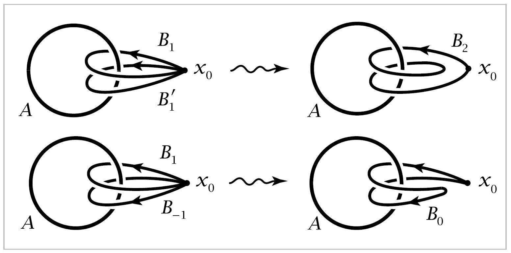
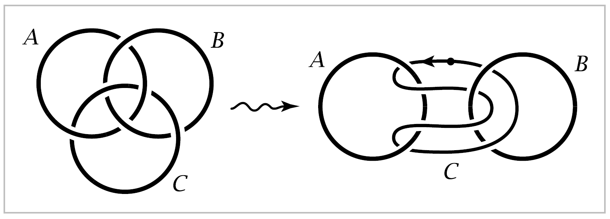
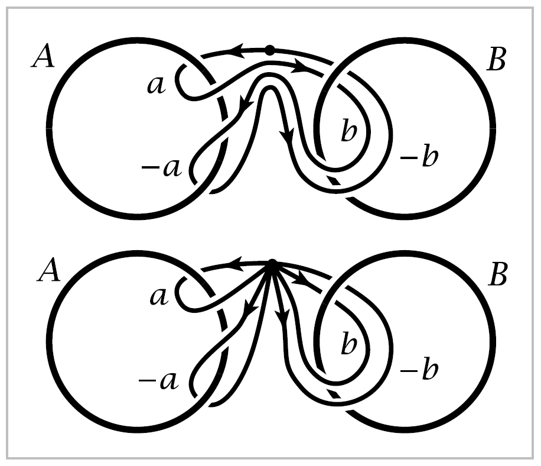
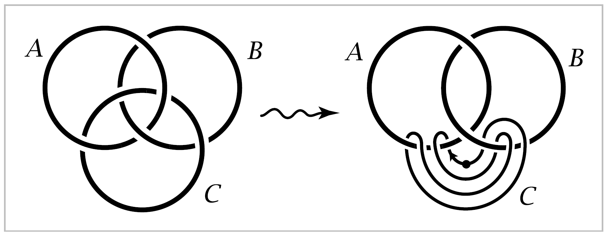

Chapter 1. The Fundamental Group#
Algebraic topology can be roughly defined as the study of techniques for forming algebraic images of topological spaces. Most often these algebraic images are groups, but more elaborate structers such as rings, modules, and algebras also rise. The mechanisms that create these images – the ‘lanterns’ of algebraic topology, one might say – are known formally as functors and have the characteristic feature that they form images not only of spaces but also of maps. Thus, continuous maps between spaces are projected onto homomorphisms between their algebraic images, so topologically related spaces have algebraically related iamges.
With suitably constructed lanterns one might hope to be able to form images with enough detail to reconstruct accurately the shapes of all spaces, or at least of large and interesting classes of spaces. This is one of the main goals of algebraic topology, and to a surprising extent this goal is achieved. Of course, the lanterns necessary to do this are somewhat complicated pieces of machinery. But this machinery also has a certain intrinsic beauty.
This first chapter introduces one of the simplest and most important functors of algebraic topology, the fundamental group, which creates an algebraic image of a space from the loops in the space, the paths in the space starting and ending at the same point.
The Idea of the Fundamental Group#
To get a feeling for what the fundamental group is about, let us look at a few preliminary examples before giving the formal definitions.
To shed further light on this example, suppose we modify it slightly so that the circles \(A\) and \(B\) are now linked, as in the next figure.
{kind=link}
Consider two linked circles \(A\) and \(B\) in \(\mathbb{R}^3\), as shown in the figure. Our experience with actual links and chains tells us that since the two circles are linked, it is impossible to separate \(B\) from \(A\) by any continuous motion of \(B\), such as pushing, pulling, or twisting. We could even take \(B\) to be made of rubber or stretchable string and allow completely general continuous deformations of \(B\), staying in the complement of \(A\) at all times, and it would still be impossible to pull \(B\) off \(A\). At least that is what intuition suggests, and the fundamental group will give a way of making this intuition mathematically rigorous.
{kind=link}
Instead of having \(B\) link with \(A\) just once, we could make it link with \(A\) two or more times, as in the figures to the right. As a further variation, by assigning an orientation to \(B\) we can speak of \(B\) linking \(A\) a positive or a negative number of times, say positive when \(B\) comes forward through \(A\) and negative for the reverse direction. Thus for each nonzero integer \(n\) we have an oriented circle \(B_n\) linking \(A\) \(n\) times, where by ‘circle’ we mean a curve homeomorphic to a circle. To complete the scheme, we could let \(B_0\) be a circle not linked to \(A\) at all.
Now, integers not only measure quantity, but they form a group under addition. Can the gorup operation be mimicked geometrically with some sort of addition operation on the oriented circles \(B\) linking \(A\)? An oriented circle \(B\) can be thought of as a path traversed in time, starting and ending at the same point \(x_0\), which we can choose to be any point on the circle. Such a path starting and ending at the same point \(x_0\) can be ‘added’ to form a new loop \(B+B'\) that travels first around \(B\), then around \(B'\).
{kind=link}
For example, if \(B_1\) and \(B'_1\) are loops each linking \(A\) once in the positive direction, then their sum \(B_1 + B'_1\) is deformable to \(B_2\), linking \(A\) twice. Similarly, \(B_1 +B_{-1}\) can be deformed to the loop \(B_0\), unlinked from \(A\). More generally, we see that \(B_m + B_n\) can be deformed to \(B_{m+n}\) for arbitrary integers \(m\) and \(n\).
Note that in forming sums of loops we produce loops that pass through the basepoint more than once. This is one reason why loops are defined merely as continuous paths, which are allowed to pass through the same point many times. So if one is thinking of a loop as something made of stretchable string, one has to give the string the magical power of being able to pass through itself unhamred. However, we must be sure not to allow our loops to intersect the fixed circle \(A\) at any time, otherwise we could always unlink them from \(A\).
Next we consider a slightly more complicated sort of linking, involving three circles forming a configuration known as the Borromean rings, shown at the left in the figure below. The interesting feature here is that if any one of the three circles is removed, the other two are not linked.
{kind=link}
In the same spirit as before, let us regard one of the circles, say \(C\), as a loop in the complement of the other two, \(A\) and \(B\), and we ask whether \(C\) can be continuously deformed to unlink it completely from \(A\) and \(B\), always staying in the complement of \(A\) and \(B\) during the deformation. We can redraw the picture by pulling \(A\) and \(B\) apart, dragging \(C\) along, and then we see \(C\) winding back and forth between \(A\) and \(B\) as shown in the second figure above. In this new position, if we start at the point of \(C\) indicated by the dot and proceed in the direction given by the arrow, then we pass in sequence: (1) forward through \(A\), (2) forward through \(B\), (3) backward through \(A\), and (4) backward through \(B\). If we measure the linking of \(C\) with \(A\) and \(B\) by two integers, then the ‘forwards’ and ‘backwards’ cancel and both integers are zero. This reflects the fact that \(C\) is not linked with \(A\) or \(B\) individually.
To get a more accurate measure of how \(C\) links with \(A\) and \(B\) together, we regard the four parts (1)-(4) of \(C\) as an ordered sequence.
{kind=link}
Taking into account the directions in which these segments of \(C\) pass through \(A\) and \(B\), we may deform \(C\) to the sum \(a+b-a-b\) of four loops as in the figure. We write the third and fourth loops as the negatives of the first two since they can be deformed to the first two, but with the opposite orientations, and as we saw in the preceding example, the sum of two oppositely oriented loops is deformable to a trivial loop, not linked with anything. We would like to view the expression \(a+b-a-b\) as lying in nonabelian group, so that it is not automatically zero. Changing to the more usual multiplicative notation for nonabelian groups, it would be written :math:aba^{-1}b^{-1}, the commutator of \(a\) and \(b\).
To shen further light on this example, suppose we modify it slightly so that the circles \(A\) and \(B\) are now linked, as in the next figure.
{kind=link}
The circle \(C\) can then be deformed into the position shown at the right, where it again represents the composite loop \(aba^{-1}b^{-1}\), where \(a\) and \(b\) are loops linking \(A\) and \(B\). But from the picture on the left it is apparent that \(C\) can actually be unlinked completely from \(A\) and \(B\). So in this case the product \(aba^{-1}b^{-1}\) should be trivial.
The fundamental group of a space \(X\) will be defined so that its elements are loops in \(X\) starting and ending at a fixed basepoint \(x_0 \in X\), but two such loops are regarded as determining the same element of the fundamental group if one loop can be continuously deformed to the other within the space \(X\). (All loops that occur during deformations must also start and end at \(x_0\).) In the first example above, \(X\) is the complement of the circle \(A\), while in the other two examples \(X\) is the complement of the two circles \(A\) and \(B\). In the second section in this chapter we will show:
The fundamental group of the complement of the circle \(A\) in the first example is infinite cyclic with the loop \(B\) as a generator. This amounts to saying that every loop in the complement of \(A\) can be deformed to one of the loops \(B_n\), and that \(B_n\) cannot be deformed to \(B_m\) if \(n \neq m\).
The fundamental group of the complement of the two unlinked circles \(A\) and \(B\) in the second example is the nonabelian free group on two generators, represented by the loops \(a\) and \(b\) linking \(A\) and \(B\). In particular, the commutator \(aba^{-1}b^{-1}\) is a nontrivial element of this group.
The fundamental group of the complement of the two linked circles \(A\) and \(B\) in the third example is the free abelian group on two generators, represented by the loops \(a\) and \(b\) linking \(A\) and \(B\).
As a result of these calculations, we have two ways to tell when a pair of circles \(A\) and \(B\) is linked. The direct approach is given by the first example, where one circle is regarded as an element of the fundamental group of the complement of the other circle. An alternative and somewhat more subtle method is given by the second and third examples, where one disthinguishes a pair of linked circles from a pair of unlinked circles by the fundamental group of their complement, which is abelian in one case nad nonabelian in the other. This method is much more general: One can often show that two spaces are not homeomorphic by showing that their fundamental groups are not isomorphic, since it will be an easy consequence of the definition of the fundamental group that homeomorphic spaces have isomorphic fundamental groups.